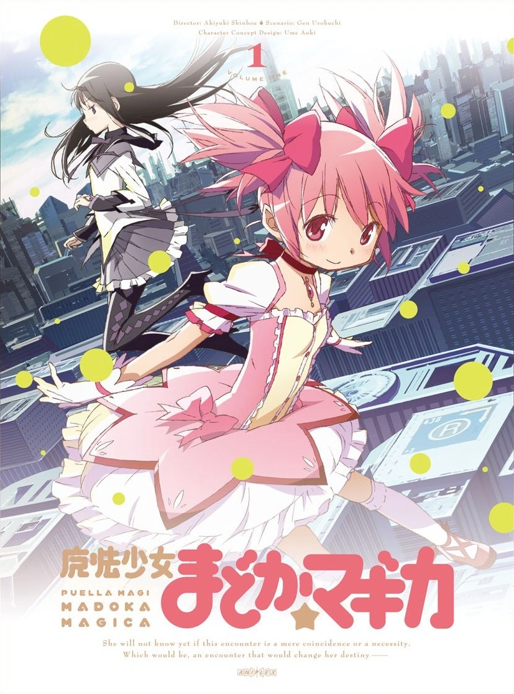
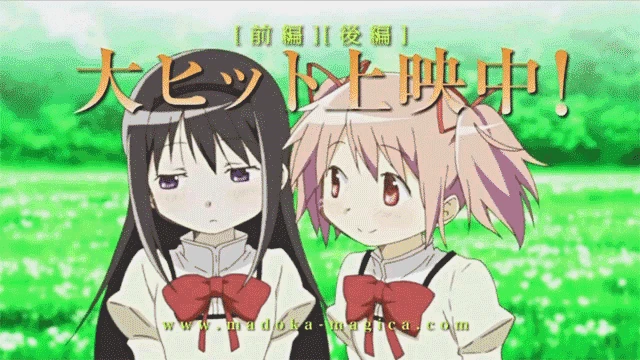

۶ৎ Puella Magi Madoka Magica ˎˊ˗

𖹭.ᐟ resumo:
𐔌 Madoka Kaname é uma garota normal que, após uma série de eventos,
se torna uma garota mágica para proteger o mundo das bruxas.
A série explora as consequências dessa escolha e a dificuldades que as garotas mágicas enfrentam,
especialmente a deterioração de suas almas e a transformação em bruxas. ⸝⸝
ᯓ★ sobre:
- Madoka é um anime de mahou shoujo (garotas mágicas)
- Madoka mágica foi lançado em 2011 pelo stúdio SHAFT
- A franquia conta com um anime, filme e 2 jogos
- Seu autor é Gen Urobuchi
- Seus criadores são Gen Urobuchi, Akiyuki Shinbo, Aniplex, Shaft, Ume Aiko

Para mais informações acesse o link:
Link para a wiki
-ˋˏ✄ ┈┈┈┈